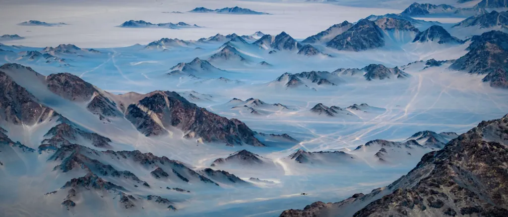
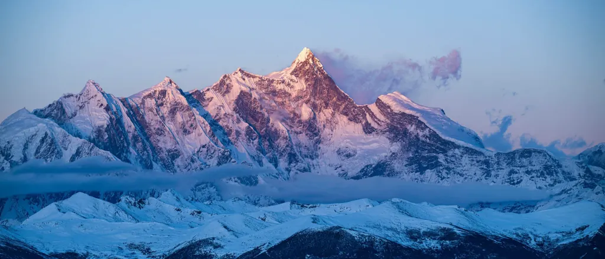
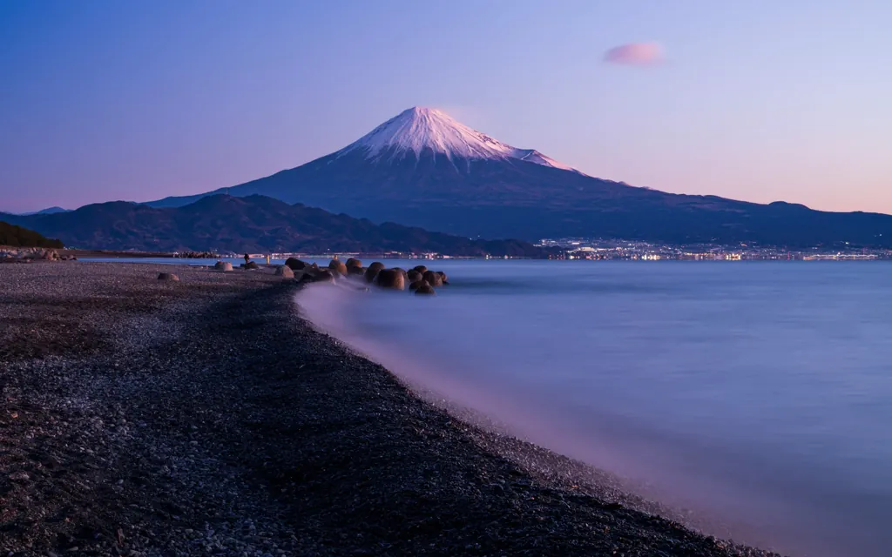
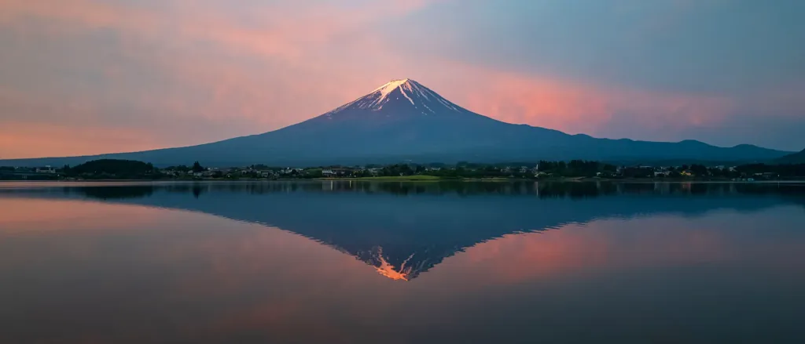
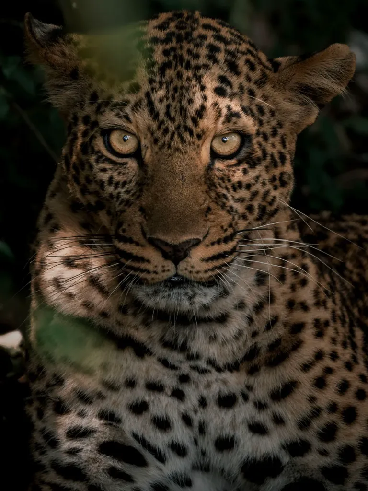
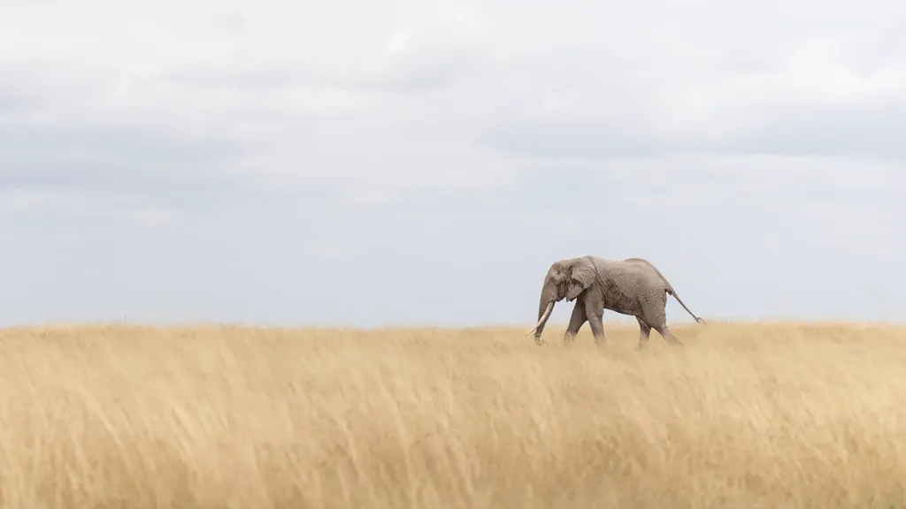
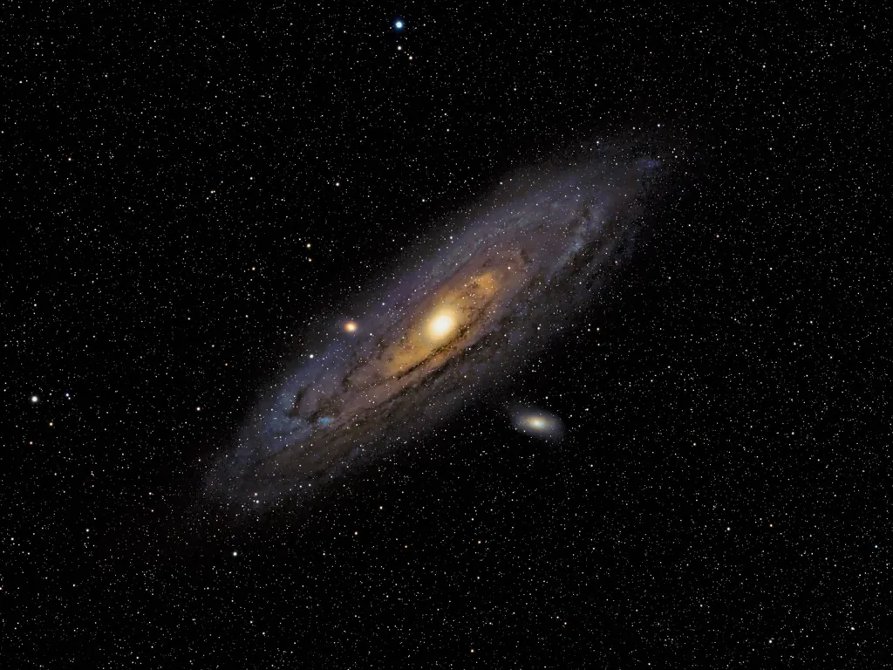
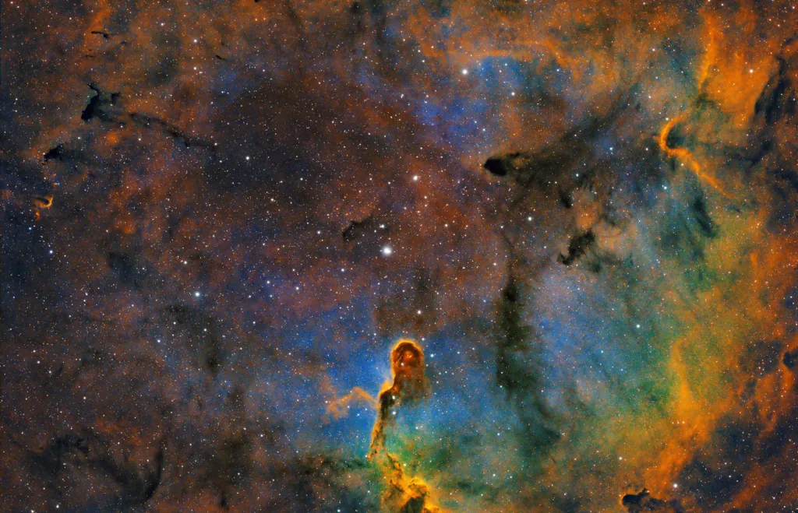
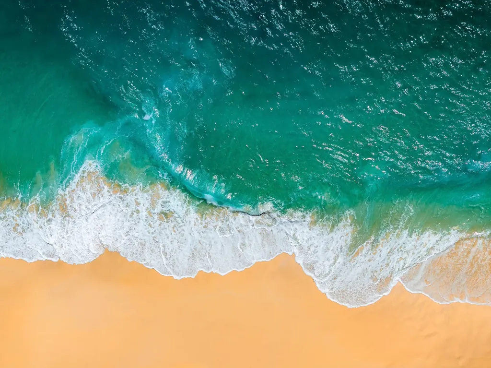
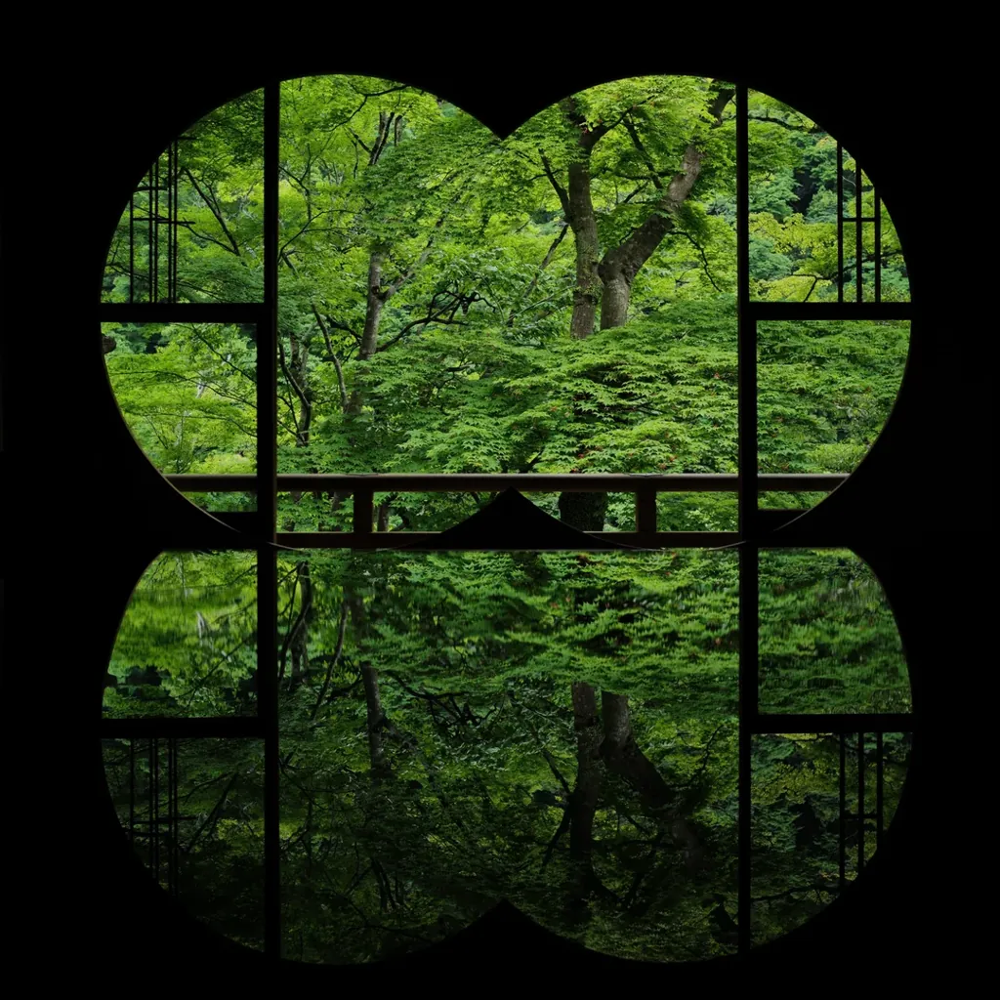

Mountains & Silence
The last light catches one ridge as the surrounding peaks settle into blue. In Qinghai, low cloud breaks a field of darker hills into islands.
Full series ↗


Business analytics & photography
I study how data describe the world. With a camera, I look for the moment a landscape changes.

Which city looks most expensive, and what changes when you look at the typical sale?
23,174 runway recordsWhich runway is longest at a facility, and how can we keep the other runways in view?
17,414 hourly observationsDoes the holiday difference look the same at breakfast and at lunch?
The last light catches one ridge as the surrounding peaks settle into blue. In Qinghai, low cloud breaks a field of darker hills into islands.
Full series ↗
Two views of Fuji from the water. The shoreline in one gives the mountain a scale; the reflection in the other nearly doubles its silhouette.
Full series ↗

A leopard holds the camera’s gaze. An elephant crosses an open grassland. Distance changes how much of the encounter the frame can hold.
Full series ↗

The bright center of Andromeda sits inside a tilted disk. The second frame follows dust and glowing gas around the Elephant’s Trunk Nebula.
Full series ↗

An incoming wave at Kelingking Beach, Indonesia, leaves a narrow white edge on the sand. A shaded window gives summer green a much tighter frame.
Full series ↗
